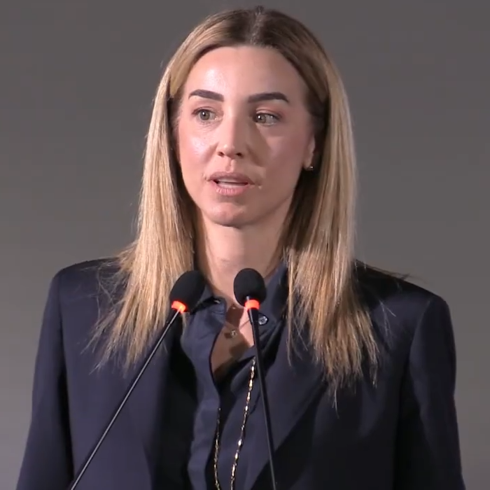
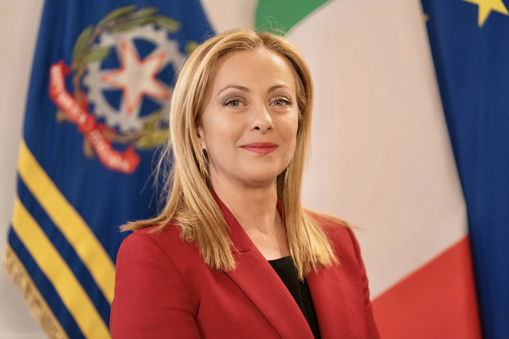

Plaza Matteotti · dj set de Charlotte de Witte
¿Concierto, mitin, o las dos cosas a la vez?
Clic en el video para reproducir · YouTube
Hoja de ruta
Silvia Salis · foto Rub86 · CC BY 4.0 · Wikimedia
Punto de partida
«El postulado de Sartori concerniente a la primacía de lo visual adquiere un significado más completo cuando se extrapola a internet.»
Quevedo-Redondo & Portalés-Oliva (2017), p. 917 — sobre Sartori (1998)

Silvia Salis (2026) · CC BY 4.0 · Wikimedia
885 unidades · 5 candidatos · 2015–2016
La apelación emocional (82,7%) septuplica la petición explícita del voto.
Quevedo-Redondo & Portalés-Oliva (2017). % = registro "ordinario".
Contexto
«Sono Giorgia, sono una madre, sono cristiana.»(Soy Giorgia, soy madre, soy cristiana.)
Giorgia Meloni · Roma, 2019
Foto: Rub86 · CC BY 4.0 · Wikimedia Commons
El discurso de victoria
«Una vittoria che non è solo mia.»(Una victoria que no es solo mía.)
Silvia Salis · publicación de victoria, Instagram, mayo 2025
Núcleo · el caso
«En Instagram, los líderes comparten imágenes acordes a las tradicionales demandas de los medios, además de dar continuidad al fenómeno de la popularización política.»
Quevedo-Redondo & Portalés-Oliva (2017), p. 920
@silviasalis · Instagram (oficial)
Núcleo · el caso
«Infraestructuras sociales.»
Expresión propia de Salis · prensa, 2025-2026
@silviasalis · Instagram (oficial)
El evento como dispositivo
«Noi la città più vecchia d'Europa? Bisogna farla vivere.»(¿Somos la ciudad más vieja de Europa? Hay que hacerla vivir.)
Silvia Salis sobre la rave — Open, 12 de abril de 2026
Clic para reproducir
Lo que el marco no contempla
Salis abre TikTok para hablar a los jóvenes.
@silvia_salis_sindaca, 2025 · paráfrasis atribuida
Las críticas
«Per sminuire una donna guardano come si veste, non quello che fa. Non funziona.»(Para menospreciar a una mujer miran cómo se viste, no lo que hace. No funciona.)
Silvia Salis en Vanity Fair Italia · vía DIRE, 21 de abril de 2026
@silviasalis · Instagram (oficial) — la foto de la polémica
Novedad 2 · género
Fotos: Rub86 CC BY 4.0 · Governo italiano CC BY 3.0 IT · Wikimedia Commons

La tesis
«El celebrity politician tiende a convertirse en tal cuando solapa la intención de reforzar su liderazgo con la de conquistar al elector, conmoverlo o incluso provocarle una sonrisa.»
Quevedo-Redondo & Portalés-Oliva (2017), pp. 924-925, sobre Wheeler (2013)
Silvia Salis (2026) · CC BY 4.0 · Wikimedia
Cierre
Silvia Salis · foto Rub86 · CC BY 4.0 · Wikimedia
Pregunta para el debate
En 2017 la apelación emocional septuplicaba la petición explícita del voto. ¿Qué proporción veríamos hoy con TikTok, IA generativa de video y eventos masivos?
Pregunta abierta — a partir de Quevedo-Redondo & Portalés-Oliva (2017)
Silvia Salis (2026) · CC BY 4.0 · Wikimedia